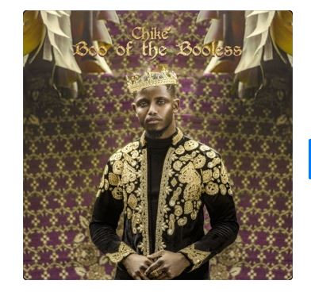
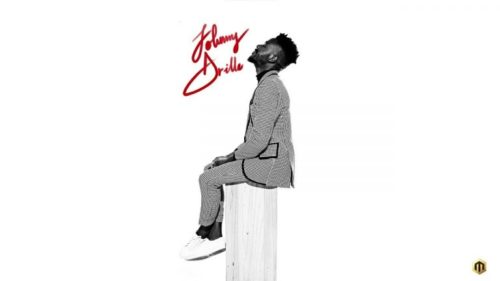

Chike Has made his first project which he aptly titled “Boo Of The BooLess“, This album will mark his debut for the year 2020 and it it consists of 14 Lp tracks with notable guest appearance from Zoro, Ric Hassani and MI Abaga.

Shine is a classic folk tune that was released in February 2019. It is a thoughtful song that certainly warms the heart.
It is not the regular alternative song because the lyrics are so powerful, relatable, and well structured. The chorus could serve as a mantra to everyone, both young and old. The Kind of song that you listen to to get energized and inspired.

Naira Marley London’s underground legend, a key pioneer in the UK AfroBashment scene, fusing his inimitable Lagos accent with trap, bashment, grime and afrobeats to create a sound that encapsulates the melting pot of London’s and Nigeria’s, constantly innovative club scene shows no sign of relenting as he hits us with another infectious jam
The song “Away” is taken from Ayra Starr’s debut project, ‘Ayra Starr‘ EP which serves as her introductory work.
Mavin Records New Diva, Ayra Starr Drops The Single – “Sare“. This track is lifted from her debut AYRA STARR EP and its music lovers’ favourite, second to ‘Away‘.